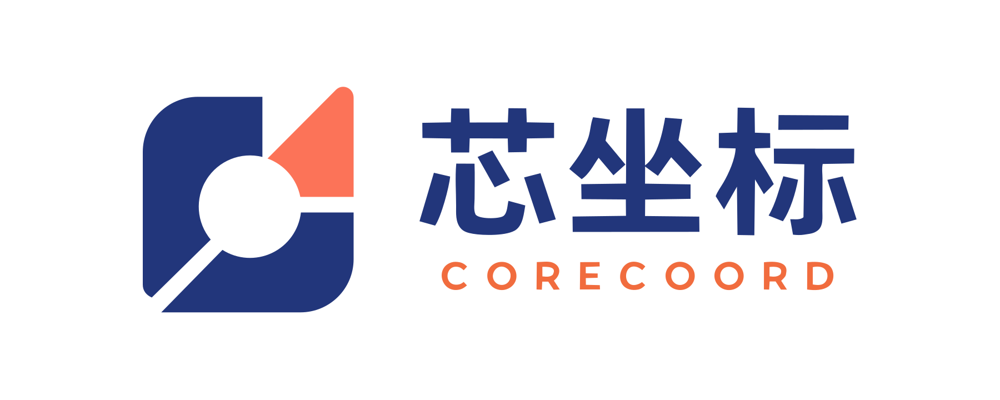
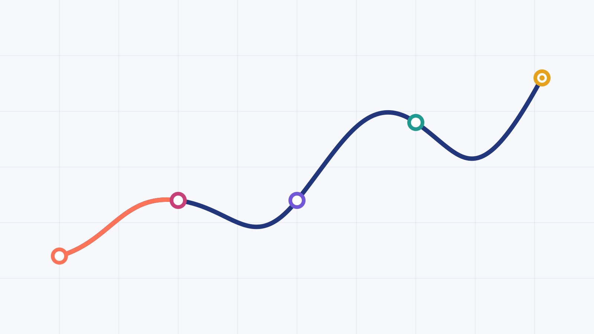
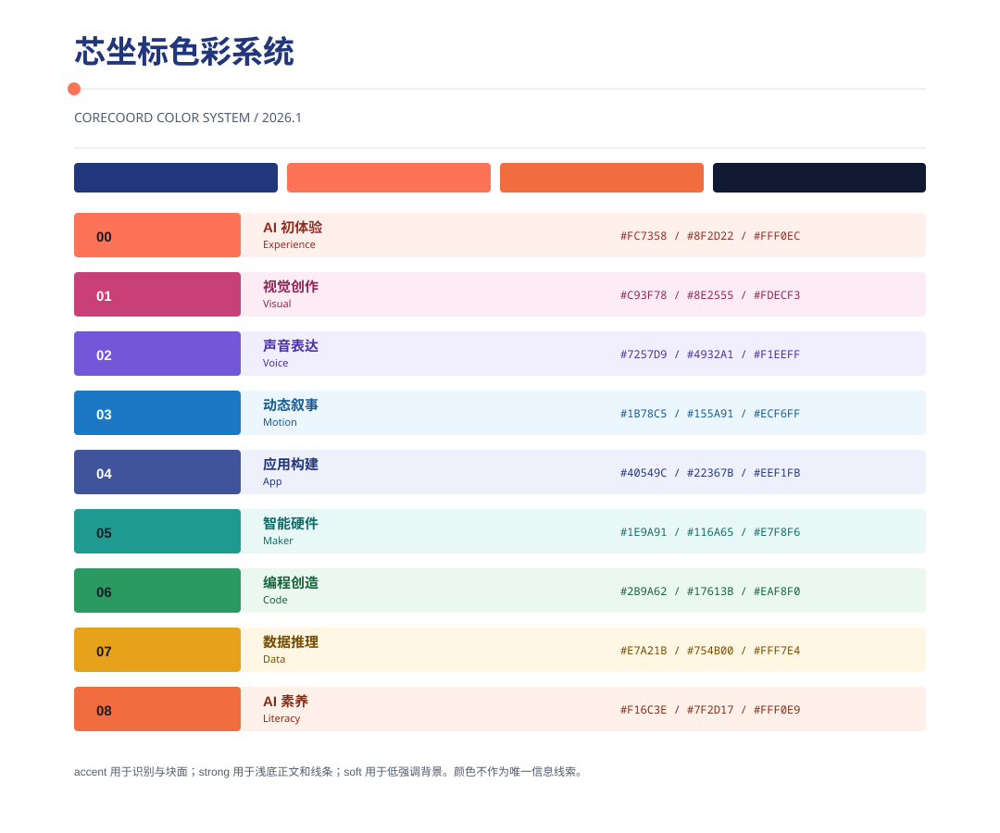
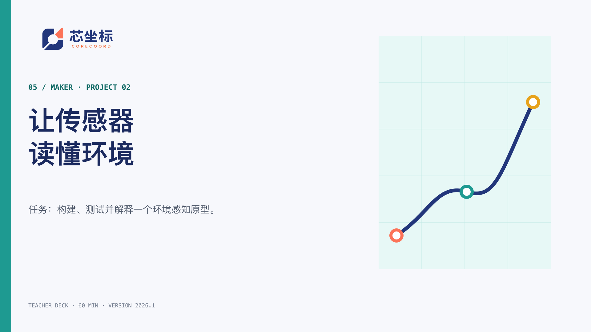
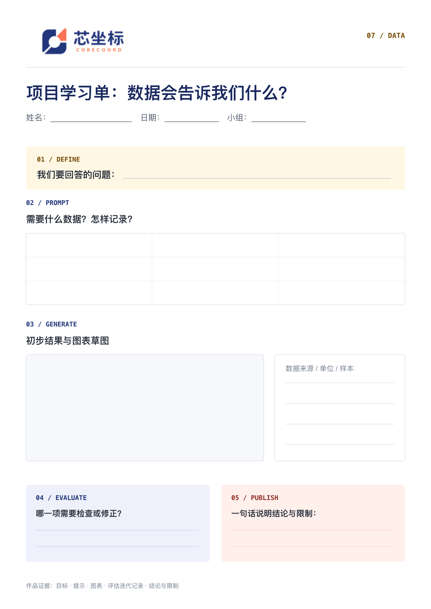
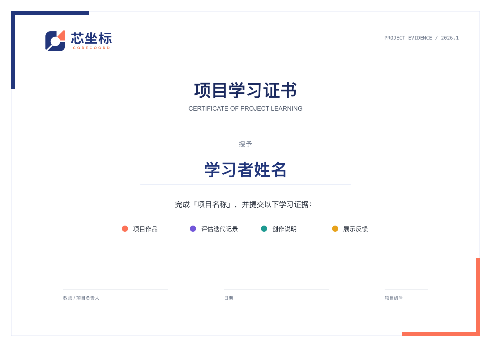
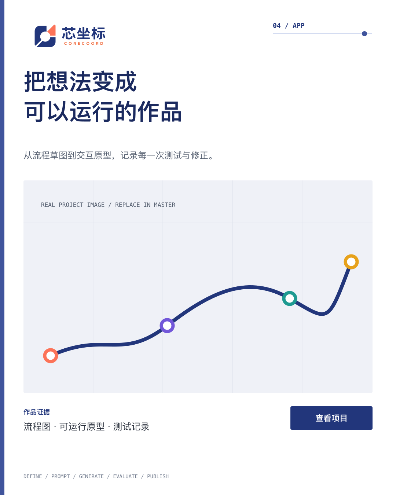
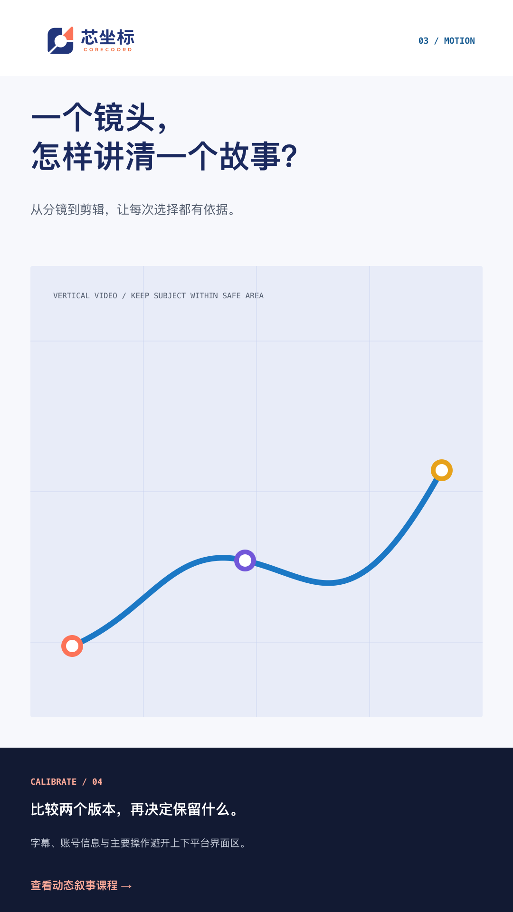
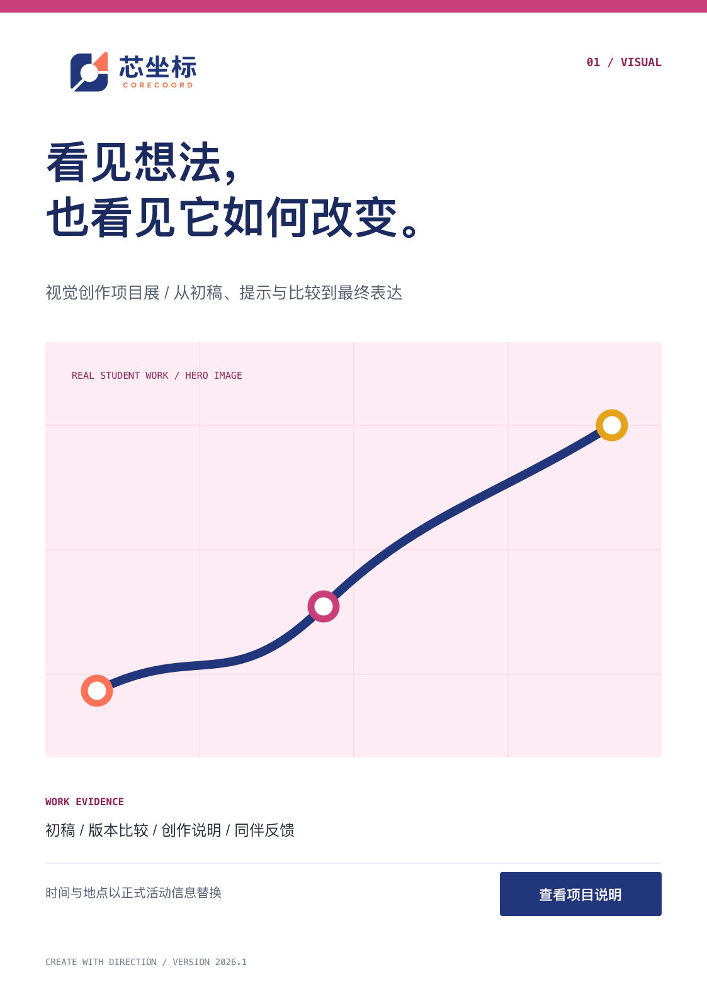

视觉识别系统
与生成式内容规范
Visual identity & generative content system

00 / System map
这是一套可执行系统，不是一组情绪图
品牌战略、课程证据、视觉令牌、模板与 LLM 工作流使用同一版本号和校验链。任何对外资产都能回答：依据是什么、谁批准、如何重放。
Office 课程文件完整提取
课程单元 / 9 个内容域
自动审计检查项
- 01品牌战略与人格
- 02教育闭环与能力轴
- 03活性坐标视觉哲学
- 04标志与联合品牌
- 05色彩、字体、网格
- 06辅助图形与影像
- 07动效、课程与营销模板
- 08LLM 生成与发布治理
01 / Brand definition
让学习者在 AI 世界中找到方向
芯坐标是一套以真实创作项目为载体的少儿 AI 教育体系，帮助学习者理解 AI、运用 AI、检验 AI，并用可展示的作品建立自己的能力坐标。
有方向的创造
Create with direction.
不是工具速成
从问题、选择、构建和验证出发，而不是把提示词输入与一次成品当作完整学习。
不是结果许诺
用作品、过程和测试证据说明学习，不以焦虑、收入、竞赛或“专业级”承诺推动购买。
01.1 / Name & personality
“芯”是核心，“坐标”是方向与证据
芯 / CORE
AI、计算与智能硬件的技术核心；每位学习者作为判断中心；好奇、创造与责任形成的能力内核。
坐标 / COORD
定位问题、规划路径、测量进步、连接他人，并以作品、版本、测试和表达留下可见证据。
清醒
概念准确、层级清楚；不冷漠、不堆术语。
精致
比例与素材经得起检查；不靠奢华效果。
好奇
鼓励提问与试验；不追逐每一个热点。
可信
证据可追溯，承认边界；不做绝对承诺。
02 / Learning loop
五步学习闭环，把创造过程变得可见
每个项目不必平均占用五步，但必须让目标、行动、校准与证据之间的关系清楚。
观察情境，发现问题，明确目标与限制。
拆解任务，选择方法，安排角色与路径。
创作、编程、制作或组合可工作的初版。
测试、比较、修正，并说明选择依据。
展示成果与过程，把方法迁移到新问题。
02.1 / Capability & evidence
四条能力轴，三层作品证据
创意表达
图像、声音、故事、动态与交互如何表达意图。
计算构建
代码、应用、算法和硬件系统如何工作。
证据推理
数据、测试、比较与来源如何支持结论。
责任判断
隐私、权利、公平、安全与人的责任边界。
作品 / Outcome
做出了什么。
过程 / Process
版本、提示、代码、来源与选择。
验证 / Verification
测试、度量、反馈、反思与安全检查。
03 / Living Coordinates
精密感来自秩序，活力来自真实行动
点是发现与证据，线是关系与路径，刻度是可测量的进步，开放区域是仍可选择的下一步。
它们必须帮助理解“从哪里出发、经过什么、抵达什么”，不能退化为电路板或泛科技装饰。
明亮开放真实作品有目的的偏移04 / Identity system
正式标志是固定资产，不是可生成风格
图形标
开放容器、中央核心留白与右上行动信号。
中文字标
定制转曲几何字形，不以系统字体替换。
英文字标
固定暖橘、宽字距与相对尺寸，不重新排字。
04.1 / Space, size & background
先保护识别，再选择组合
| 场景 | 横版 | 图形标 |
|---|---|---|
| 数字常规 | ≥ 280 px | ≥ 24 px |
| 数字极小 | 改用图形标 | 16 px 仅 Favicon |
| 印刷 | ≥ 45 mm | ≥ 8 mm |
背景规则
白/浅底使用彩色版；`#121A33` 深底使用反白版；摄影底优先构图留白，必要时使用完整纯色色带。安全空间最低 1X，联合品牌建议 1.5X。
04.2 / Identity guardrails
Logo 不参与风格探索
正确
- 直接导入正式 SVG/PDF/PNG。
- 按背景切换官方彩色、反白或单色版。
- 视频和生成图完成后再后期叠加。
禁止
- 拉伸、旋转、裁切、描边、投影、发光或渐变。
- 替换中英文字形、调整字距或组件比例。
- 用课程域色替换 Logo 色。
- 把图形标拆成花纹或 Logo 轮廓平铺。
- 让图像/视频模型生成、重绘、补全或变形 Logo。
- 联合品牌时创建融合标志或共同胶囊容器。
05 / Core color
稳定的核心色，明亮的内容世界
默认比例
中性 `65–80%`；靛蓝 `10–20%`；单个课程色 `5–15%`；珊瑚/橘总计通常不超过 `10%`。
角色优先
Logo 色固定；正文、状态与课程导航使用令牌中的 `accent / strong / soft / on-accent`。
印刷管理
屏幕母版 sRGB；CMYK 根据承印条件与 ICC 输出意图转换并打样，不声明万能数值。
05.1 / Course domain color
九个内容域，一套主品牌
课程色用于导航、节点与比较，不创建九套子品牌。编号与名称必须与颜色一起出现。
Accent 色块与节点
Strong 浅底文字与线
Soft 低强调背景
On accent 指定反差文字
一张主画面通常选择一个课程域色。多课程比较时保留编号、名称或符号作为冗余信息。

05.2 / Accessible color
亮色负责识别，深色负责阅读
最低标准
正常文字 `4.5:1`；大文字与关键非文本 `3:1`。Signal Coral 与 Wordmark Orange 不作为白底小正文。
必须同时做到
颜色不是课程域、状态、正确/错误或进度的唯一信号；同时使用编号、名称、图标、线型或文字。
自动审计
正式组合共 35 项，当前全部通过。新组合必须进入同一对比度检查。
06 / Typography
统一双语骨架，按内容调整密度
找到问题，
构建可以验证的作品。
Find the problem.
Build work you can test.
LOCATE / MAP / BUILD / CALIBRATE / SHARE
| 角色 | 字体 | 字重 |
|---|---|---|
| 标题/正文 | Noto Sans SC | 400 / 500 / 600 / 700 |
| 代码/坐标 | Noto Sans Mono CJK SC | 400 / 500 / 700 |
| Logo | 官方转曲字形 | 不作为排版字体 |
字距默认 0；中文左对齐，不强制两端对齐；标题自然换行，不自动缩至不可读；中文与英文/数字之间留半角空格。
屏幕正文至少 16 px；移动端使用离散字号，不随视口连续缩放。低龄内容加大字号和行距，而不是换成幼稚字体。
07 / Grid & space
先建立阅读顺序，再决定视觉张力
数字网格
| 画布 | 列 | 边距 | 列距 |
|---|---|---|---|
| ≥ 1440 px | 12 | 64 px | 24 px |
| 1024–1439 | 12 | 48 px | 20 px |
| 768–1023 | 8 | 32 px | 16 px |
| < 768 | 4 | 20 px | 12 px |
空间与造型
基础网格 `8 px`，微调 `4 px`；常用间距 `8 / 12 / 16 / 24 / 32 / 48 / 64 / 96`。
圆角仅 `2 / 4 / 8 px`。页面区块依靠留白、色带、分隔线和栅格；不把所有内容做成漂浮卡片，也不嵌套卡片。
稳定尺寸
板面、按钮、图标、计数器、视频框与固定画幅使用明确尺寸或比例，内容变化不能推动布局跳动。
08 / Graphic language
每一条线都要有含义
| 组件 | 语义 |
|---|---|
| 原点 | 学习者、发现、决定性起点 |
| 节点 | 证据、版本、测试决定 |
| 开放路径 | 过程、关系、迁移与下一步 |
| 刻度 | 真实测量、阶段或时间 |
| 网格 | 定位、比较和结构支撑 |
标准线宽 2 px；展示路径按画幅 3–12 px；节点至少为线宽 3 倍。网格使用低对比中性色且不穿过正文。
禁止无意义波浪、电路板、HUD、二进制雨、科技六边形、渐变光球与 Logo 轮廓花纹。
09 / Photography & video
拍学习发生的动作，不拍“正在用电脑”
优先捕捉
- 手、眼神、材料、代码、测试与具体作品。
- 讨论、规划、组装、调试、比较和展示。
- 动作发生前后与版本之间的可见变化。
- 学习者高度、自然肤色、真实材质与负空间。
- 多样而自然的角色与协作关系。
避免
- 整齐排坐、统一对镜头微笑、空泛屏幕操作。
- 持续俯拍、成人化儿童、技术角色刻板分配。
- 青橙重调色、赛博朋克暗房与过度 HDR。
- 模糊主体来为文字腾空间，或生成乱码界面。
- 未经授权的姓名、学校、账号、位置与生物特征。
09.1 / Illustration, icon & data
解释优先于装饰
插画
用于抽象系统和无法拍摄的概念；清晰几何轮廓、有限色面和真实空间关系。不模仿具体在世艺术家或流行 IP。
图标与控件
同一界面使用一套成熟线性图标；20/24 px、约 2 px 描边。陌生图标配标签或 Tooltip；常规儿童触控目标优先 44 × 44 px。
数据图表
先回答一个问题；显示轴、单位、时间、样本与来源。用标签、线型和形状冗余编码；不使用 3D 饼图和误导性截轴。
学习进度表达“已有证据与下一步”，不把复杂能力压成一个看似精确的总分。
生成式插画必须标记来源；Logo、准确文字、图表数据与二维码在后期确定性合成。
1810 / Motion & sound
运动有来源、有方向、有停驻
缓动
cubic-bezier(.2, 0, 0, 1)
动态安全
不超过每秒 3 次闪烁；超过 5 秒自动运动提供暂停；尊重减少动态偏好。
声音
对白优先于音乐；保留字幕、文字稿和无音乐版。按渠道测响度，不使用万能 LUFS。
11 / Course communication
课程材料让任务、过程和检查方式一眼可见
封面顺序
- 芯坐标正式 Logo
- 课程域编号与名称
- 项目/课次标题
- 一句具体任务
- 版本与教师/学生标识
演示文稿
16:9，安全边距至少 64 px；课堂正文建议 ≥ 24 px；一页一个主要信息目标。
学习单与项目档案
显示闭环步骤、预计时间、输入、产出和检查方式；为书写、草图、版本比较与反思留真实空间。
项目档案至少包含：问题、计划、初版、一次校准、最终版、学习者说明和权限状态。
年龄密度
启蒙用大形状与短句；进阶创作增加角色与版本；工程/数据允许参数、代码和测试点。课程编号不自动等于年级。
11.1 / Course templates
课程与学习证据模板

Presentation 16:9
课程域、任务、版本与主视觉。

Worksheet A4
五步闭环、草图区与校准记录。

Certificate A4
证书记录作品证据，不宣称模糊等级。
12 / Marketing templates
同一视觉骨架，适配不同传播画幅

4:5 Feed
主体、证据与一个 CTA。

9:16 Story
保留平台界面安全区与字幕区。

A3 Poster
真实作品主视觉与过程证据。
12.1 / Message & format
第一信号永远是项目、作品或具体问题
| 画幅 | 基础安全区 |
|---|---|
| 1080 × 1080 | 64 px |
| 1080 × 1350 | 64 px |
| 1080 × 1920 | 左右 72 / 上下 160 px |
| 1920 × 1080 | 96 px |
| A4 | 建议 18 mm 版心边距 |
渠道 UI、上传限制和裁切会变化，导出前查看规格注册表的核验日期。
不以巨型抽象口号覆盖第一视口；一张静态图或一个短视频只保留一个主 CTA。
13 / LLM production
模型生成内容层，系统合成品牌层
模型可以
生成无品牌标识的概念图、对象/环境、镜头候选、抽象路径动效和受证据约束的文案草稿。
模型不可以
生成 Logo、准确中文字、二维码、法律信息、真实凭证、虚构课程成果或未授权真实学员形象。
13.1 / Truth & provenance
来源标识不是免责声明，而是生产事实
真实拍摄或作品。保留授权、日期、场景与编辑记录；不添加不存在的人、设备或成绩。
模型生成或完全构建的概念视觉。不得描述为真实课堂、真实学员或真实成果。
真实与生成内容混合。记录生成/替换区域和会影响观者判断的编辑。
每个资产必须保存
已验证简报、证据/权利、准确提示词、模型与版本、原始输出、后期源文件、审核记录、发布文件与校验值。
来源技术
支持时嵌入 C2PA Content Credentials；不支持时交付 JSON sidecar。来源证明制作链路，不自动证明内容真实。
14 / Export & quality
发布是一组可复查的文件，不是一张“最终版”
数字图片
sRGB；图形/Logo 优先 SVG，透明位图用 PNG/WebP；从矢量在目标尺寸或整数倍超采样导出，不放大截图。
视频
逐行、原生帧率、Rec.709、48 kHz；常规上传从 MP4/H.264 4:2:0/AAC-LC/fast start 开始；字幕与文字稿独立交付。
印刷
PDF/X-4、嵌入字体与输出意图；通常 3 mm 出血，以承印商为准；正式批量前打样。
自动检查
文件名、尺寸、色域、Logo 哈希、对比度、Schema、SVG 语法、旧品牌、占位符、编码、字幕与校验值。
人工签核
课程事实、年龄与安全；品牌层级与影像；权利和儿童隐私；真实设备可访问性；渠道裁切、CTA 与发布链接。
15 / International baseline
采用当前标准，也明确不做虚假合规声明
| 领域 | 基线 |
|---|---|
| 无障碍 | WCAG 2.2 Recommendation |
| 设计令牌 | DTCG Format 2025.10 |
| 印刷色彩 | ICC.1:2022 / v4.4 |
| 印刷交付 | ISO 15930-7 PDF/X-4 |
| PDF 可访问 | ISO 14289-2:2024 PDF/UA-2 |
| 领域 | 基线 |
|---|---|
| 儿童与 AI | UNICEF AI and Children 3.0 |
| AI 教育 | UNESCO AI competency / GenAI guidance |
| 来源凭证 | C2PA 2.4 / sidecar fallback |
| 图像元数据 | IPTC Photo Metadata 2025.1 |
| 视频 | YouTube 官方编码建议 / EBU R128 |
可访问 HTML 是手册数字母版；PDF 是固定版式交付。只有完成语义标记、阅读顺序、替代文本和辅助技术测试后，才可声明 PDF/UA 合规。
2716 / Delivery map
一套源文件，四种使用入口
人阅读
`manual/index.html`
`manual/output/pdf/`
`guidelines/`
设计制作
`deliverables/templates/`
`deliverables/assets/`
`deliverables/fonts/`
代码接入
`corecoord.tokens.json`
`corecoord.css`
`schemas/`
LLM 生产
`llm-baseline/`
`prompts/`
`workflows/`
版本
CORECOORD VI 2026.1
Logo Final 2026.1
Major：身份/战略不兼容变化；Minor：新增域、模板或令牌；Patch：错误、无障碍或导出修复。
发布前最后五问
是否一眼看出少儿 AI 教育？
是否看见行动、作品或证据？
事实和权利是否可追溯？
Logo、文字、色彩和可访问性是否合规？
是否只有一个清楚的下一步？